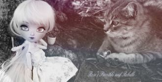
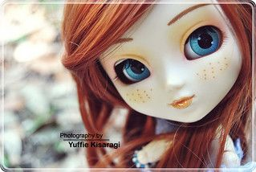
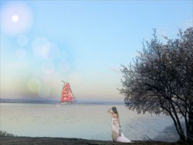
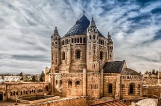

Выглянуло солнышкоИз-за серых туч.Золотистым зёрнышкомПрыгнул первый луч.
Я маленькая пчёлка,Я целый день жужу. (Да!)Ни в садик и ни в школуСовсем я не хожу. (Жу-жу жу-жу)А здесь, вот в этом улье
А ну-ка, песню нам пропой, веселый ветер,Веселый ветер, веселый ветер!Моря и горы ты обшарил все на свете
Поздно утром только сониСпят, свернувшись калачом,Мы встаём, лишь солнце тронетНас своим косым лучом.
Бывает всё на свете хорошоВ чём дело сразу не поймёшьА просто летний дождь прошёлНормальный летний дождь
Где-то на белом свете, там, где всегда мороз,Трутся спиной медведи о земную ось.Мимо плывут столетия, спят подо льдом моря,
Если вы нахмурясь выйдете из дома,Если вам не в радость солнечный денек,Пусть вам улыбнется, как своей знакомой,
Кружляють сотні сніжинокЗа моїм вікномВід сяйва наших ялинокТане сніг кругомСерце своє намалююПодихом на склі
Кружит Земля, как в детстве карусель.
А над землёй кружат ветра потерь.
Ветра потерь, разлук, обид и зла -
Им нет числа.
So one of these nights and about twelve o'clockThis old world's going to reel and rockSaints will tremble and cry for pain
Светит звёздочка с небес,
Манит нас в страну чудес.
Нежный лучик с высоты
Дарит грёзы и мечты.
В лес приходит сказка
Снег, как чистый лист
В разноцветных красках
Искупалась кисть
Сами начинают
Руки рисовать

Мне не узнатьТайны все твои.Да и зачемМне они?Что было раньше -То давно прошло.Что будет дальше -Всё хорошо-о-о-о!
Ровный бег моей судьбы,Ночь, печаль и плеск души,Лунный свет и майский дождьВ небесах...
(...Проигрыш...)

Небо тает облаками,
Я иду к тебе с цветами.
Ты моя, ты любимая!
Мне так мало в жизни надо,
Мир прекрасен если рядом
Jerusalema ikhaya lamiNgilondolozeUhambe namiZungangishiyi lanaJerusalema ikhaya lamiNgilondolozeUhambe nami

Я разгадал твой сказочный пароль,Он был мечтою маленькой Ассоль.Хочу под алым парусом дойтиИ до твоей мечты, если любишь ты.
Как пойду я на быструю речку,Сяду я да на крут бережок,Посмотрю на родную сторонку,На зеленый приветный лужок.
КапельЗавтра будет будний день,будет новая капель.Смотр погоды показал день на день, и есть капель.Подморозит утром снова, это есть погоды слово.

В горах, как в Господних ладонях,Лежит дивный Ерушалаим.Давай по нему мы сегодняНемного вдвоём погуляем.